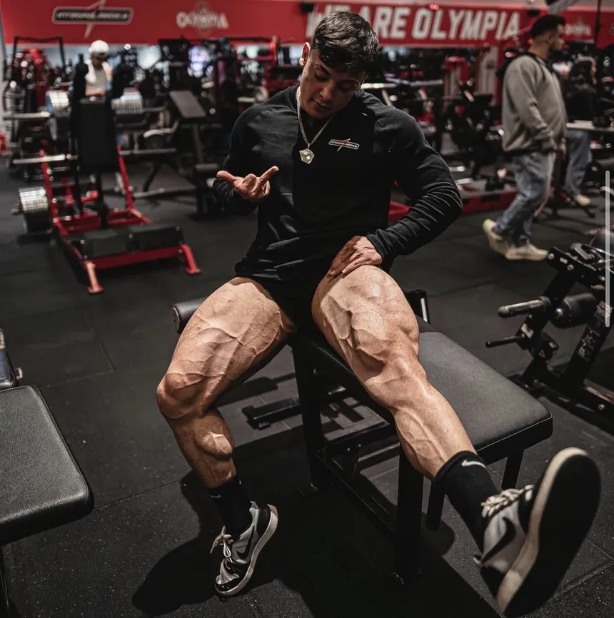

Minhas Playlists
Gerencie e explore suas coleções de músicas favoritas. Clique no titulo de cada playlist para expandir os detalhes e faixas.
| Total de Playlists: 4 | Total de Faixas: 11 | Tempo Total: Aprox. 45 min |
Foco para Estudar

Criador: Pedro Henrique Lopez
Descrição: Músicas instrumentais e calmas para manter a concentração nos estudos e na programação.
Estilo: Instrumental / Lo-Fi | Duração: 45 min
| Ordem | Musica | Artista | Duracao |
|---|---|---|---|
| 1 | Luz do Dia | Banda Horizonte | 3:42 |
| 2 | Piano Suave | Instrumental JP | 3:10 |
| 3 | Chuva Calma | Ambiente Zen | 4:00 |
Treino Pesado

Criador: Pedro Henrique Lopez
Descrição: Batidas aceleradas e muita energia para dar o seu melhor na academia.
Estilo: Eletrônica / Funk | Duração: 10 min
| Ordem | Musica | Artista | Duracao |
|---|---|---|---|
| 1 | Batida do Norte | DJ Norte | 3:18 |
| 2 | Energia Total | Funk Beats | 2:50 |
| 3 | Sobe o Ritmo | MC Vibe | 3:05 |
Domingo Tranquilo

Criador: Pedro Henrique Lopez
Descrição: Sons relaxantes para aproveitar o fim de semana com calmaria.
Estilo: MPB / Acústico | Duração: 8 min
| Ordem | Musica | Artista | Duracao |
|---|---|---|---|
| 1 | Mare Cheia | Mare Alta | 4:05 |
| 2 | Tarde de Sol | Bossa Nova JP | 3:50 |
Modo Programador

Criador: Pedro Henrique Lopez
Descrição: Linhas de código fluindo ao som de batidas eletrônicas e lo-fi.
Estilo: Synthwave / Lofi | Duração: 10 min
| Ordem | Musica | Artista | Duracao |
|---|---|---|---|
| 1 | Lo-fi para Codar | Beats Lofi | 3:30 |
| 2 | Cafe e Codigo | Instrumental JP | 3:15 |
| 3 | Deploy Sexta-feira | Eletronica Mix | 3:40 |